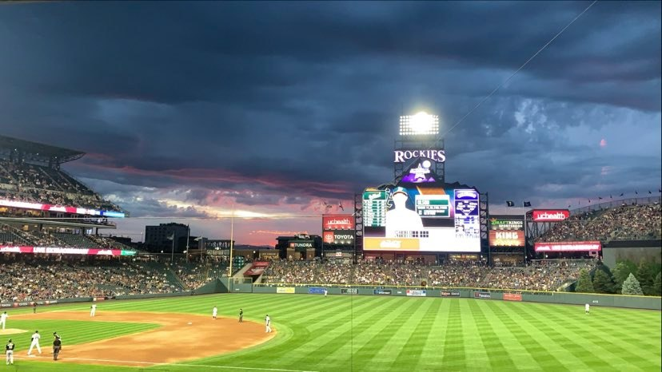
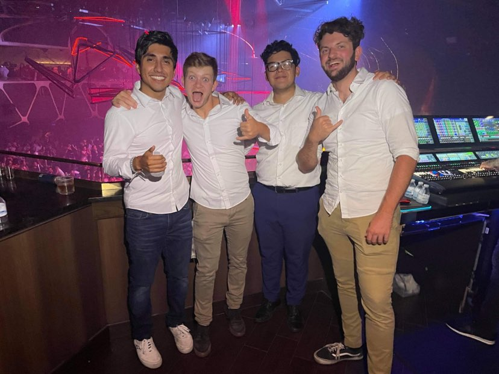

Mate,also known as chimarrão or cimarrón, is a traditional South American caffeine-rich infused drink. It is made by soaking dried leaves of the holly species Ilex paraguariensis in hot water and is served with a metal straw in a container typically made from a calabash gourd (the mate proper), but also in some areas made from a cattle horn (guampa). Mate was consumed by the Guaraní and Tupí peoples. It has been drunk in South America since before the arrival of Europeans. Its consumption was exclusive to the natives of two regions of the territory that today is Paraguay but that before was named United Provinces of the Río de la Plata (now Argentina),more specifically the departments of Amambay and Alto Paraná. Some ethnic groups that consumed it are the Avá, the Mbyá and the Kaiowa, and also, to a lesser extent, other ethnic groups that carried out trade with them, such as the ñandevá, the Taluhets (ancient pampas) and the Qom (Tobas).It is the national beverage of Argentina, Paraguay and Uruguay and is also consumed in the Bolivian Chaco, Northern and Southern Chile, Brazil, Syria (the largest importer in the world) and Lebanon, where it was brought from Paraguay and Argentina by immigrants.
Learn more about the Benefits of Mate!I love anything related to baseball. I love going to games, watching it on TV, play fantasy baseball with my friends, learning its history and legacy etc. I can say that Baseball is my only true love in life so far. Been in the park transports me to my childhood, when nothing mattered, life was simple, I only care about having fun and be myself.
Music has always been an important thing in my life. I play guitar, ukulele and I even play the trumpet in my High School Marching Band for a year. Music has been there for me when I lack the words to express my feelings or when I cannot find the answers to soothe my soul. One of my favorite memories is going to Vegas with my friends and get VIP seats to see Steve Aoki live!!
It has been a long winter and two long years with the pandemic. I am currently looking to make new friends, all of my old friends have graduated or are "happily married" now. I am planning to go on hikes, go to some concerts, drink mate, catch some baseball games and maybe a little road trip to a National Park. If you are down, send me a text or drop your résumé through email. The worst thing I can say is “no, you do not seem cool enough to kick it with me”